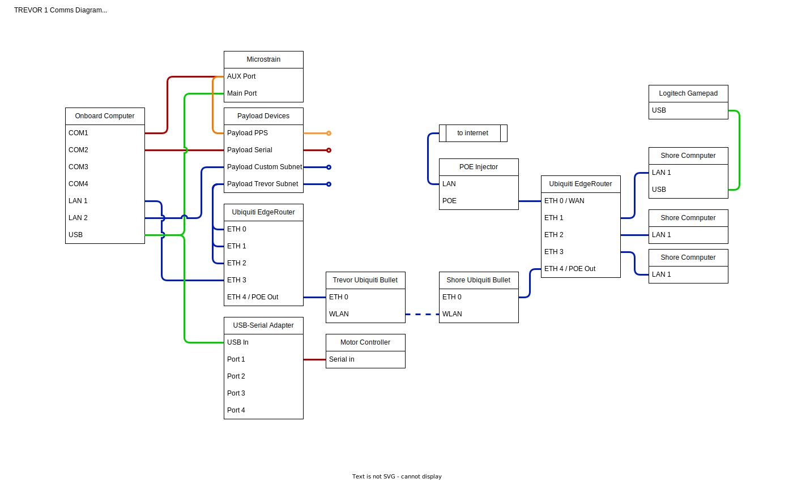
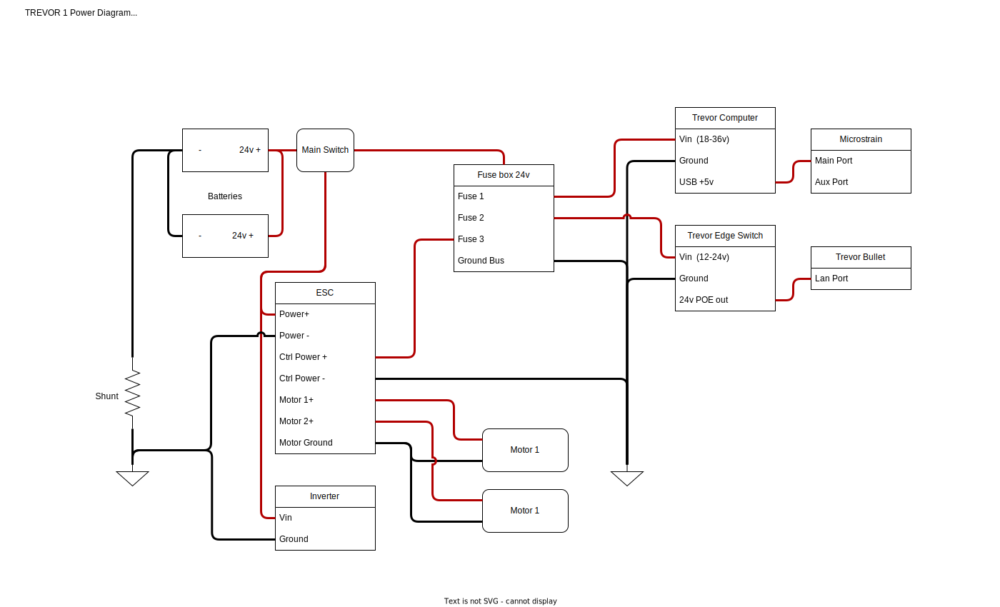
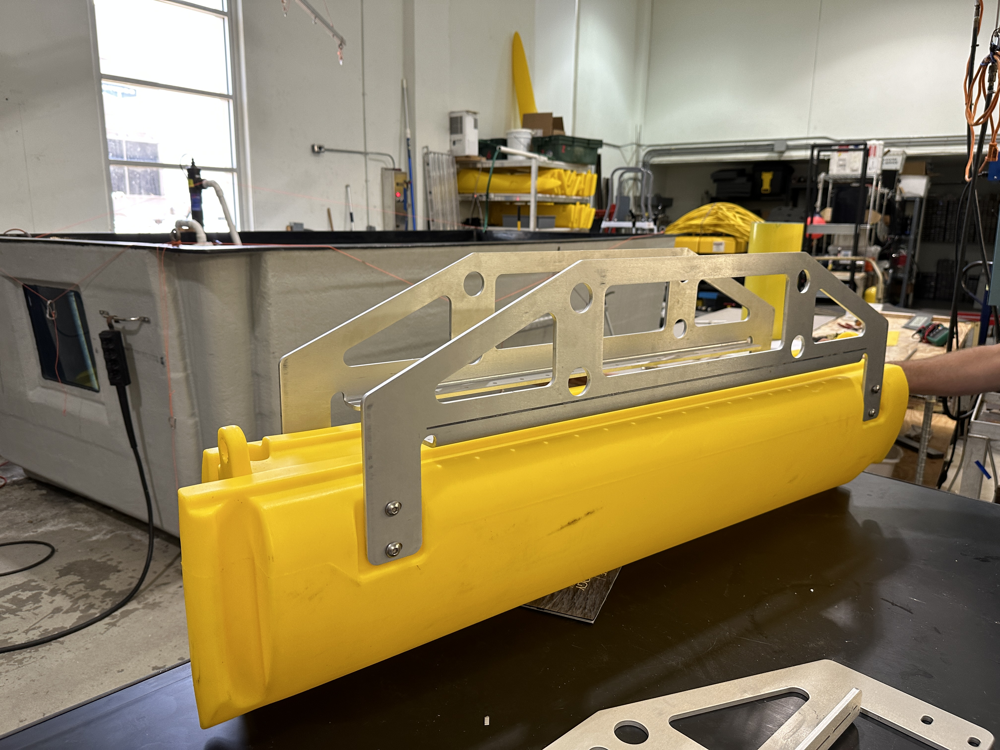
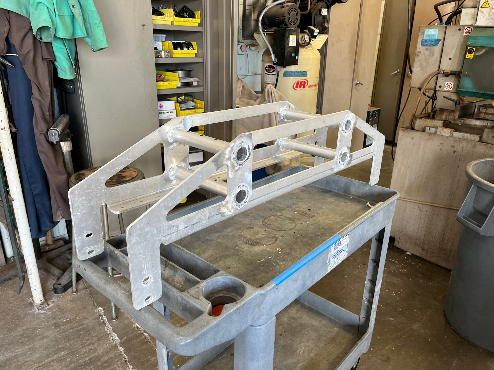
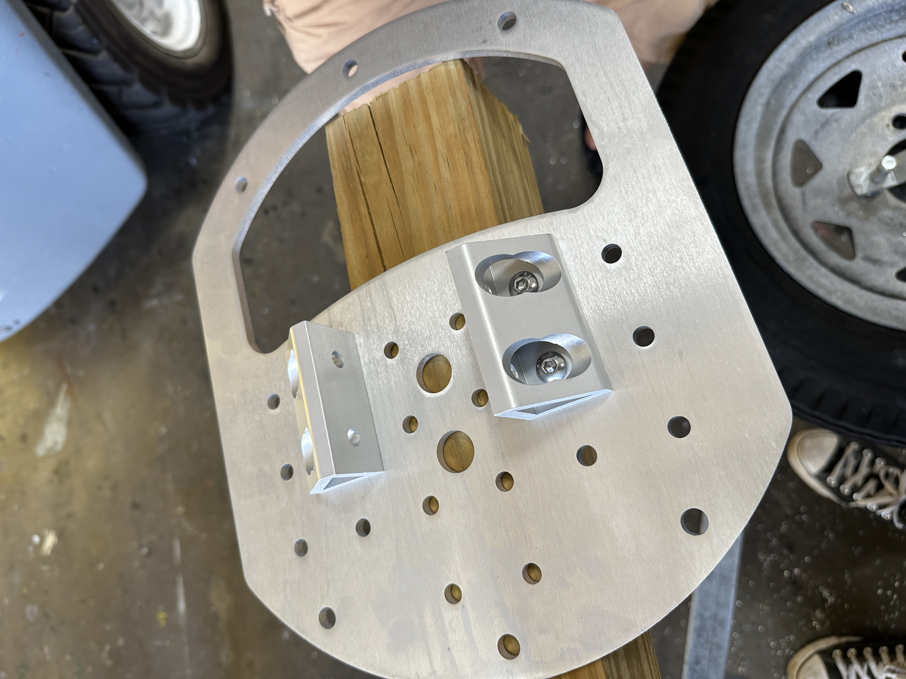
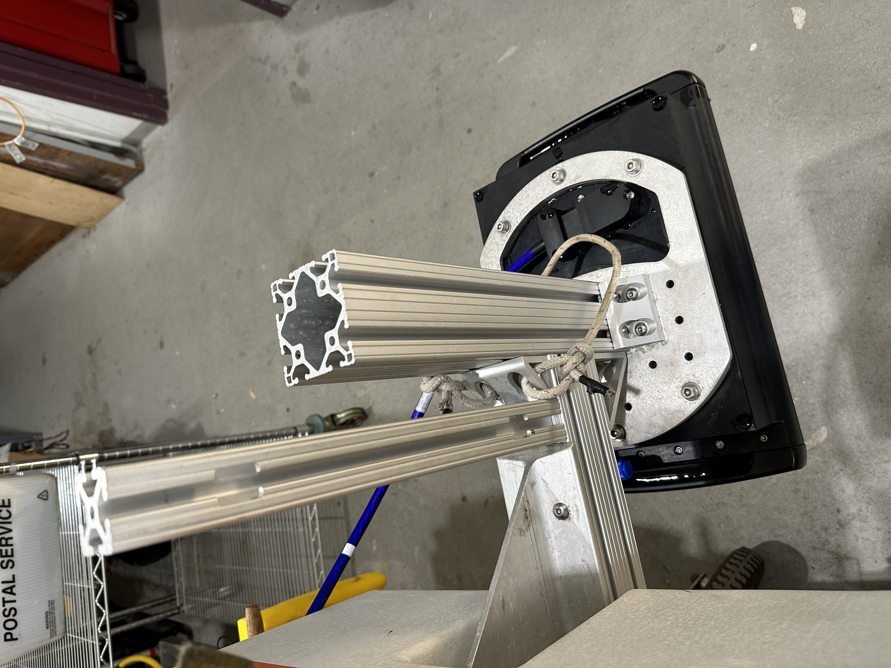
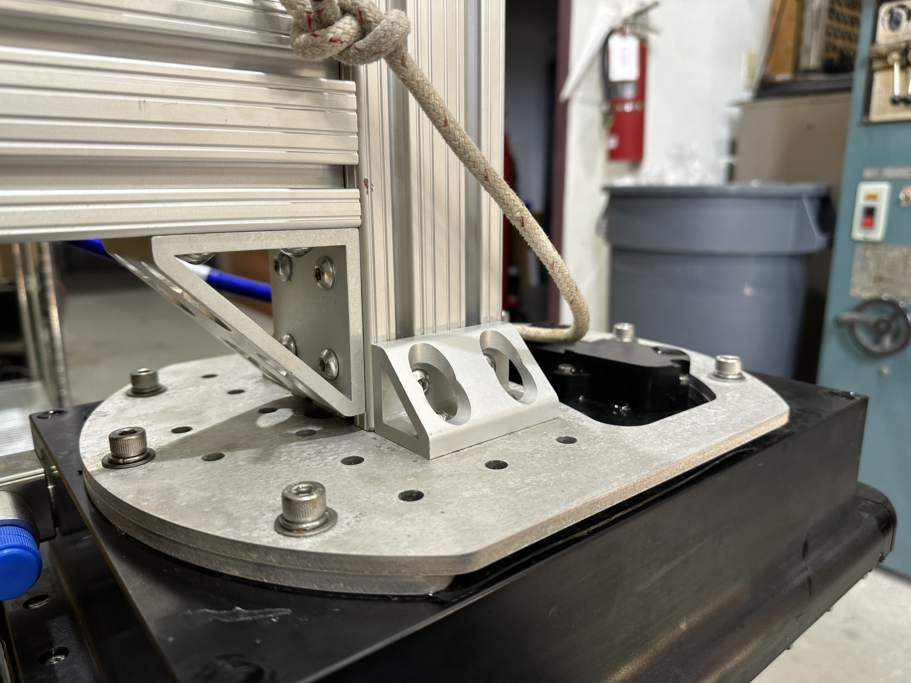

|
TREVOR
1.0.0
A ROS2 Respository for trevor specific code and doccumentation
|
|
TREVOR
1.0.0
A ROS2 Respository for trevor specific code and doccumentation
|


The onboard computer is a Premio Fanless mini pc part no: RCO-1000-EHL-J6413-20-P. It is running ubuntu 20.04 with ROS1 Noetic and ROS2 Foxy.
The full configuration can be found here: Premio Edge PC configuration
NOTE: at this time we have not been able to communicate through COM3 and COM4. As a temporary fix we have been using a USB-Serial adapter for additional serial ports.
The navigation system used is the Microstrain 3DM-GQ7. This device requires some custom wiring not fully described in the diagram above. Please see the Microstrain Configuration page for details.
The shore station consists of Ubiquiti Bullet, an Edge Router, a Field Laptop, and a Logitech gamepad. Additional PCs or devices may be connected to ports ETH 2 and ETH 3 on the shore EdgeRoutter.
The network devices used are:
The devices are configured as follows:
The motor controller found on the vehicle is manufactured by Roboteq. The operators manual can be found here: Motor Controller Manual
The syntax required for communication with the motor controller can be found in the user manual and is sumarized as follows:
Syntax: !Mnn
Examples of correctly formatted commands are:
The mounts were sent to a third-party manufacturer called SendCutSend. Find the DXF file that can be submitted here: DXF
If you wish to modify or rebuild the part, find a 3D PDF and drawing screenshot below: 3D PDF
The mounts were manufactured out of 0.25" 5052 Aluminium. 
The following parts were ordered from McMaster Carr for use as fasteners:
| Part Name | Quantity | Link |
|---|---|---|
| 6061 Al Pipes | ~1 per mount, cut to size | McMaster |
| Bolts | 4 per mount | |
| Lock Washers | 4 per mount |
The pipes were cut to length and welded into place. These attatch the hulls to the vehicle. 
The entire multibeam mounting system consists of a mounting plate and a series of 8020 rails/brackets. This system was mounted to the lower I-beam structure of the USV.




The mount plate was designed in SolidWorks and manufactured by SendCutSend, a third-party manufacturer.